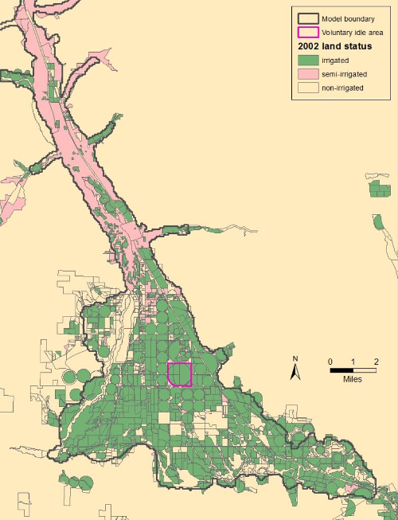
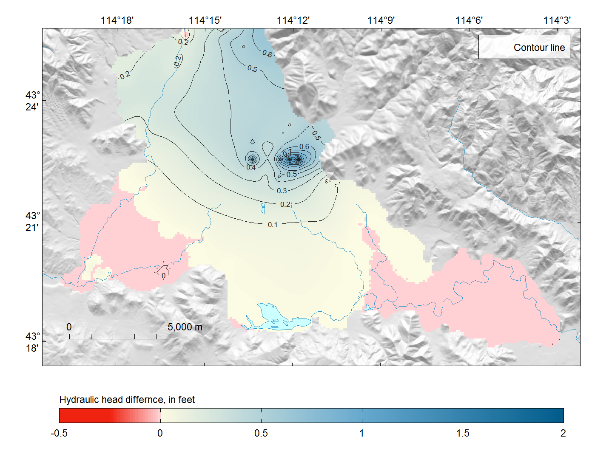

These instructions describe how to build, run, and analyze an example model scenario (Scenario 2). The model scenario describes the effects of allowing an existing parcel of irrigated land to be reclassified as “non-irrigated”; that is, what happens when you voluntarily allow an irrigated parcel to go idle. Model boundary conditions are modified in the archived calibrated model to best represent this scenario. The idled land parcel (about 600 acres, or better yet 2.4-square kilometers) is shown in the following figure.

Changes to unprocessed-data files include:
Irrigated lands (“extdata/irr/irr.lands.<YYYY>.zip”)—changed parcel status to “non-irrigated”.
Evapotranspiration (ET)(“extdata/et/et.<YYYMM>.tif”)—reduced ET within the parcel and set equal to the monthly precipitation during the irrigation season (April–October).
Combined surface-water irrigation diversions (“extdata/div/comb.sw.irr.csv”)–removed diversions associated with wells in parcel.
Groundwater points of diversion (“extdata/div/pod.gw.csv”)—removed diversions for wells in parcel.
Well sites (“extdata/div/pod.wells.zip”)—removed sites located in parcel.
Files that did not need to be modified for this scenario, but may want to considered for modification in similar types of model scenarios include:
Surface water diversions (“div.sw.csv”)—we assumed surface water associated with the idled parcel is now delivered to other “junior” users within the same canal service area.
Groundwater diversions (“div.gw.csv”)—if there had been “measured” groundwater diversions associated with the parcel, those would need to be removed.
Startup an R session. Set the working directory to the local wrv-training repository, that is the “wrv-training” folder, by typing the following command in your R console and making sure to change the file path to the correct location:
setwd("I:/Software/wrv-training")Load the wrv, inlmisc, raster, and rgdal packages into your current R environment, using
lapply(c("wrv", "inlmisc", "raster", "rgdal"), library, character.only = TRUE)Most of the R code that we need for building, running, and analyzing Scenario 2 is contained within the appendix files. Rather than rewrite all the relevant code here, we will instead write a simple function to read code chunks within an appendix code file.
ReadCodeChunks <- function(file) {
src <- readLines(file)
src <- src[src != ""]
lin <- grep("## ----", src)
nam <- gsub("#|-| |\\,.*", "", src[lin])
is.unnamed <- which(grepl("=", nam) | nam == "")
nam[is.unnamed] <- paste0("unnamed-chunk-", is.unnamed)
m <- cbind(from = lin, to = c(lin[-1] - 1, length(src)))
chunks <- apply(m, 1, function(x) src[x[1]:x[2]])
names(chunks) <- nam
return(chunks)
}Let’s put our new function to use by reading in code chunks from appendix C and D.
file <- system.file("doc", "sir20165080_AppendixC.R", package = "wrv")
app.c.chunks <- ReadCodeChunks(file)
file <- system.file("doc", "sir20165080_AppendixD.R", package = "wrv")
app.d.chunks <- ReadCodeChunks(file)Each of the relevant code chunks is labeled with a unique name. For example, the following command retrieves the code chunk named “write_modflow_input” in appendix D:
chunk <- app.d.chunks[["write_modflow_input"]]
print(chunk)[1] "## ----write_modflow_input-------------------------------------------------"
[2] "id <- \"wrv_mfusg\" # model run identifier"
[3] "dir.run <- \"model/model1\""
[4] "WriteModflowInput(rs.model, rech, well, trib, misc, river, drain, id, dir.run,"
[5] " is.convertible = FALSE, tr.stress.periods = tr.stress.periods,"
[6] " ntime.steps = ntime.steps, verbose = FALSE)" Every time we create a modified dataset it masks its wrv-package version. The R script for creating the modified datasets is primarily based on code chunks in Appendix C. Run (parse and evaluate) the code chunk named “setup” in Appendix C using the following command:
eval(parse(text = app.c.chunks[["setup"]]))Specify the folder in your working directory that contains the modified unprocessed-data files (“extdata”) and place them in a temporary directory as uncompressed files using
folder <- "extdata"
files <- list.files(folder, full.names = TRUE, recursive = TRUE)
dirs <- file.path(tempdir(), unique(dirname(files)))
sapply(dirs, function(i) dir.create(i, recursive = TRUE))
file.copy(files, file.path(tempdir(), files))
dir.in <- file.path(tempdir(), "extdata")
files <- list.files(dir.in, pattern = "*.zip$", full.names = TRUE, recursive = TRUE)
for (i in files) unzip(i, exdir = dirname(i))Create a folder in your working directory where modified R-data files will be written.
dir.out <- "data"
dir.create(dir.out, showWarnings = FALSE)Run the initial commands for specifying the unit conversions, coordinate reference system (CRS), and common spatial/temporal grid.
chunk.names <- c("unit_conversions", "crs", "spatial", "high_res_spatial", "temporal")
eval(parse(text = unlist(app.c.chunks[chunk.names])))These are processing instructions for creating level 1 modified datasets.
Read combined surface-water irrigation diversions data and write its external representation as an R object in “data/comb.sw.irr.rda”.
eval(parse(text = app.c.chunks[["comb_sw_irr_1"]]))Read points of diversion for groundwater data and write its external representation as an R object in “data/pod.gw.csv.rda”.
eval(parse(text = app.c.chunks[["pod_gw_1"]]))Read well completions data and write its external representation as an R object in “data/pod.wells.rda”.
eval(parse(text = unlist(app.c.chunks[c("pod_wells_1", "pod_wells_2")])))Read irrigated and semi-irrigated lands data and write its external representation as an R object in “data/irr.lands.rda”.
eval(parse(text = app.c.chunks[["irr_lands_1"]]))Read evapotranspiration (ET) data and write its external representation as an R object in “data/et.rda”. Note that unprocessed ET raster files (“.tif”) are required for every month in the simulation, not just months with modified values.
eval(parse(text = unlist(app.c.chunks[c("et_1", "et_2")])))These are processing instructions for creating level 2 modified datasets. Recall that level 2 datasets are dependent on level 1 data.
Write an external representation of monthly irrigation entity components as an R object in “data/entitiy.components.rda”.
eval(parse(text = unlist(app.c.chunks[paste0("entity_components_", 1:3)])))Write an external representation of monthly irrigation entities as an R object in “data/rs.entities.rda”
eval(parse(text = app.c.chunks[["rs_entities_1"]]))Write an external representation of monthly recharge on non-irrigated lands as an R object in “data/rs.rech.non.irr.rda”.
eval(parse(text = app.c.chunks[["rs_rech_non_irr_1"]]))Let’s start model processing with a clean R environment. Remove all objects created during the previous instructions and reload our modified datasets.
rm(list = ls()[ls() != "app.d.chunks"])
files <- list.files("data", pattern = "*.rda$", full.names = TRUE)
lapply(files, load, envir = .GlobalEnv)Copy all the calibrated model files from the “archive” folder to a new folder named “model” in our working directory.
dir.create("model", showWarnings = FALSE)
files <- list.files("archive", full.names = TRUE)
file.copy(files, "model", overwrite = TRUE)Specify the identifier for the model run.
id <- "wrv_mfusg"Load R objects from the “model/model.rda” file into your R environment, these objects include d.in.mv.ave, misc, reduction, rs, ss.stress.periods, tr.stress.periods, and trib. A description of each R object is given in the help documentation of the UpdateWaterBudget function in the wrv package.
load("model/model.rda")The rs object in the appendix D code is named rs.model; use the following command to address this issue:
rs.model <- rsRerun the water-balance model using our modified datasets—this results in a new MODFLOW Well file (“model/_mfusg.wel“) and quality assurance tables (”model/qa-*.csv“). Note that all modified datasets need to be passed as arguments in the UpdateWaterBudget function.
UpdateWaterBudget("model", id, qa.tables = "english", pod.wells = pod.wells,
comb.sw.irr = comb.sw.irr, et = et, pod.gw = pod.gw,
entity.components = entity.components, rs.entities = rs.entities)Run MODFLOW-USG using Scenario 2 conditions.
wd <- setwd("model")
system2(file.path(getwd(), "RunModflow.bat"), stdout = FALSE, stderr = FALSE)
setwd(wd)Read water-budget output for the archived calibrated simulation, located in the “archive” folder, and save the results for later use. To do so, run the code chunks named “read_budget_1” and “read_budget_2” in Appendix D using the following commands:
dir.run <- "archive"
eval(parse(text = unlist(app.d.chunks[paste0("read_budget_", 1:2)])))And save the average volumetric flow rates to an R object named “budget1” using
budget1 <- c("Water-table recharge" = mean(d.rech$flow.in),
"Streamflow losses" = mean(d.river$flow.in),
"Tributary basin underflow" = mean(d.trib$flow),
"Water-table discharge" = mean(d.rech$flow.out),
"Streamflow gains" = mean(d.river$flow.out),
"Production well pumping" = mean(d.well$flow),
"Stanton Crossing outlet boundary" = mean(d.drain.1$flow),
"Silver Creek outlet boundary" = mean(d.drain.2$flow))
budget1 <- setNames(as.integer(abs(budget1)) * 0.296106669, names(budget1))Next, read the water-budget output for the Scenario 2 simulation, located in the “model” folder.
dir.run <- "model"
eval(parse(text = unlist(app.d.chunks[paste0("read_budget_", 1:2)])))And save the average volumetric flow rates to an R object named “budget2” using
budget2 <- c("Water-table recharge" = mean(d.rech$flow.in),
"Streamflow losses" = mean(d.river$flow.in),
"Tributary basin underflow" = mean(d.trib$flow),
"Water-table discharge" = mean(d.rech$flow.out),
"Streamflow gains" = mean(d.river$flow.out),
"Production well pumping" = mean(d.well$flow),
"Stanton Crossing outlet boundary" = mean(d.drain.1$flow),
"Silver Creek outlet boundary" = mean(d.drain.2$flow))
budget2 <- setNames(as.integer(abs(budget2)) * 0.296106669, names(budget2))A comparison between water budgets is made by constructing the following table.
Table: Water budgets for modified and archived simulation, specified as volumetric flow rates average over 1998–2010. [Inflow: water entering the aquifer system. Outflow: water leaving the aquifer system. Component: a water budget component in the groundwater-flow model. Archived Rate: is the mean volumetric flow rate for the archived simulation. Modified Rate: is the mean volumetric flow rate for the modified simulation. Difference: is the archived rate subtracted from the modified rate. Abbreviations: acre-ft/yr, acre-feet per year]
d <- data.frame(rate1 = budget1, rate2 = budget2)
d$direction <- c("**Inflow**", "", "", "**Outflow**", "", "", "", "")
d$component <- names(budget1)
d$diff <- budget2 - budget1
d$pchange <- ((budget2 - budget1) / budget1) * 100
d <- rbind(d[1:3, ], NA, d[4:8, ], NA, NA)
d$component[nrow(d)] <- "**Inflow - Outflow**"
d$rate1[nrow(d)] <- sum(budget1[1:3]) - sum(budget1[5:8])
d$rate2[nrow(d)] <- sum(budget2[1:3]) - sum(budget2[5:8])
rownames(d) <- NULL
d <- d[, c("direction", "component", "rate1", "rate2", "diff", "pchange")]
colnames(d) <- c("", "Component", "Archived rate<br>(acre-ft/yr)",
"Scenario rate<br>(acre-ft/yr)", "Difference<br>(arce-ft/yr)",
"Percent<br>change")
d[, 3] <- formatC(d[, 3], format = "f", digits = 0, big.mark = ",")
d[, 4] <- formatC(d[, 4], format = "f", digits = 0, big.mark = ",")
d[, 5] <- formatC(d[, 5], format = "f", digits = 0, big.mark = ",")
d[, 6] <- formatC(d[, 6], format = "f", digits = 1, big.mark = ",")
d[, 1:2][is.na(d[, 1:2])] <- ""
d[, 3:6][d[, 3:6] == "NA"] <- ""
knitr::kable(d, format = "markdown", padding = 0, booktabs = TRUE, digits = 0,
row.names = FALSE, col.names = colnames(d), align = "llrrrr")| Component | Archived rate (acre-ft/yr) |
Scenario rate (acre-ft/yr) |
Difference (arce-ft/yr) |
Percent change |
|
|---|---|---|---|---|---|
| Inflow | Water-table recharge | 131,738 | 131,594 | -144 | -0.1 |
| Streamflow losses | 177,813 | 177,501 | -312 | -0.2 | |
| Tributary basin underflow | 44,042 | 44,042 | 0 | 0.0 | |
| Outflow | Water-table discharge | 28,708 | 28,708 | 0 | 0.0 |
| Streamflow gains | 251,967 | 252,628 | 661 | 0.3 | |
| Production well pumping | 62,538 | 61,459 | -1,078 | -1.7 | |
| Stanton Crossing outlet boundary | 284 | 284 | 0 | 0.0 | |
| Silver Creek outlet boundary | 9,492 | 9,492 | -0 | -0.0 | |
| Inflow - Outflow | 29,312 | 29,274 |
Read simulated hydraulic heads for archived simulation, located in “archive” folder, and save results.
Read the simulated hydraulic head (head) output for the archived calibrated model, located in the “archive” folder, and save the results for later use. To do so, run the code chunk named “read_head” in Appendix D using the following commands:
dir.run <- "archive"
eval(parse(text = app.d.chunks[["read_head"]]))And save the simulated heads in model layer 1 on August 16, 2007 to an R object named “head1” using
head1 <- rs.heads.lay1[["2007-08-16"]]Next, read the simulated head output for the Scenario 2 model, located in the “model” folder.
dir.run <- "model"
eval(parse(text = app.d.chunks[["read_head"]]))# Warning in writeValues(out, v, tr$row[i]): Reached total allocation of
# 16366Mb: see help(memory.size)
# Warning in writeValues(out, v, tr$row[i]): Reached total allocation of
# 16366Mb: see help(memory.size)And save the simulated heads in model layer 1 on August 16, 2007 to an R object named “head2” using
head2 <- rs.heads.lay1[["2007-08-16"]]A comparison between head distributions is made by constructing the following figure.
Figure: Simulated water table difference, defined as the archived water table subtracted from the modified water table, during August 2007.
r <- head2 - head1
r[] <- r[] * 3.28084
usr <- c(2472304, 2497015, 1343284, 1358838)
r <- crop(r, extent(usr))
zlim <- range(pretty(range(r[], na.rm = TRUE)))
ratio <- abs(zlim[1]) / diff(zlim)
Pal <- function(...) {
Pal1 <- colorRampPalette(c("#F02311", "#F02311", "#FFD0D4"))
Pal2 <- colorRampPalette(c("#FCFBE3", "#67A9CF", "#025D8C"))
n1 <- round(... * ratio)
n2 <- ... - n1
return(c(Pal1(n1), Pal2(n2)))
}
explanation <- "Hydraulic head differnce, in feet"
PlotMap(r, xlim = usr[1:2], ylim = usr[3:4], zlim = zlim, bg.image = hill.shading,
bg.image.alpha = 0.6, pal = Pal, dms.tick = TRUE, max.dev.dim = c(43, 56),
rivers = list(x = streams.rivers), lakes = list(x = lakes),
explanation = explanation, credit = "", contour.lines = list(col = "#1F1F1F"))
legend("topright", "Contour line", col="#1F1F1F", lty = 1, lwd = 0.5,
inset = 0.02, cex = 0.7, box.lty = 1, box.lwd = 0.5, bg = "#FFFFFFCD")